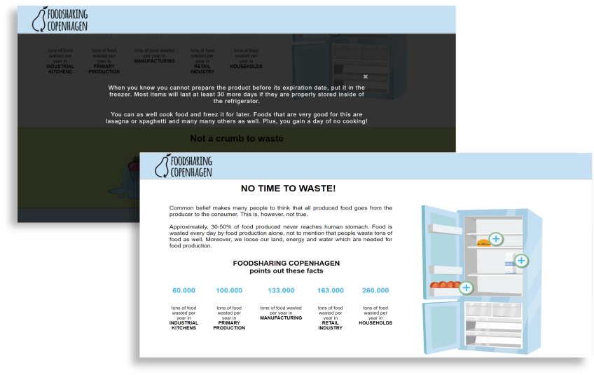

BASIC CONTENT
05.02.01 Foodsharing Copenhagen
05.02.03 Storyboard
05.02.04 Customer Pitch


During the assignment, we worked with the company Foodsharing Copenhagen. We worked in teams of four and we focused on creating a campaign website for this organization to educate about food waste problem.
We created a video that was supposed to show the problem and promote the Foodsharing Copenhagen organization. We made a storyboard for the video so it would be easier to produce it and better to visualize how we want the final video to look like.
We included the video on our interactive website which was designed in this clear and interactive way regarding to our target audience. To promote our website on social media, we made a short promo video to catch the attention of users.
At the end of the fifth theme, we gave a pitch to the customer – Foodsharing Copenhagen. We presented them with our solution – our campaign website with video.
We created a video that was supposed to show the problem and promote the Foodsharing Copenhagen organization. We made a storyboard for the video so it would be easier to produce it and better to visualize how we want the final video to look like.
We included the video on our interactive website which was designed in this clear and interactive way regarding to our target audience. To promote our website on social media, we made a short promo video to catch the attention of users.
At the end of the fifth theme, we gave a pitch to the customer – Foodsharing Copenhagen. We presented them with our solution – our campaign website with video.
While working on the assignment we gained skills in Adobe Premiere Pro, we learned how to record a video – what to be aware of while working on it (e.g. lightning, sound).
We formed groups based on personality tests and created teams based on the results, so there would be someone from each type of personality (implementor in my case).
We created team canvas, distributed roles based on the results, we set our common goal, purpose and talked about weaknesses and strengths which was very helpful while working on the project.
FOODSHARING CAMPAIGN
STORYBOARD
CUSTOMER PITCH
We formed groups based on personality tests and created teams based on the results, so there would be someone from each type of personality (implementor in my case).
We created team canvas, distributed roles based on the results, we set our common goal, purpose and talked about weaknesses and strengths which was very helpful while working on the project.
FOODSHARING CAMPAIGN
STORYBOARD
CUSTOMER PITCH